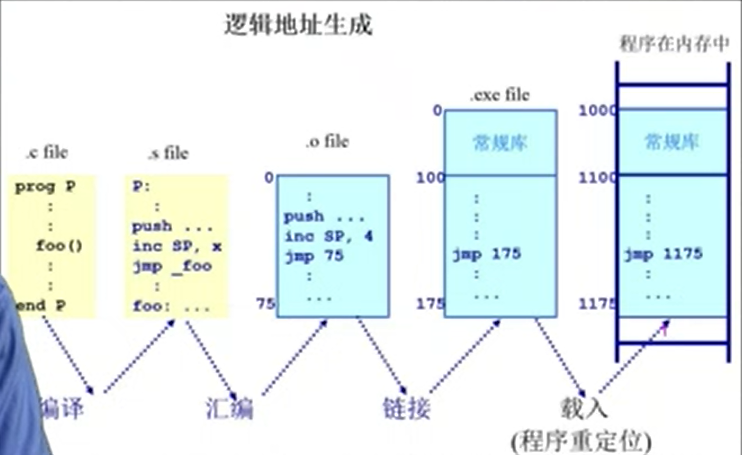

地址空间和地址生成
地址空间定义
-
物理地址空间
硬件支持的地址空间
起始地址0,到地址MAXsys -
逻辑地址空间
一个运行的程序所拥有的内存范围
起始地址0,到地址MAXprog
最终映射到物理地址空间
地址生成
逻辑地址

程序代码经过编译后,编译成汇编程序.地址还是在符号中体现(变量名,函数名)
汇编程序经过汇编器 , 变成 .o 程序,这些程序的起始地址都是从0开始的,符号会转换为相应的地址,是一个相对从0开始的连续地址空间
linker把多个.o程序链接成一个程序,其中不同的.o程序的地址都做了全局的分布.
最后放在硬盘中的程序会经过 loader 会把应用程序的地址进行偏移分配
物理地址

OS中有一个MMU,MMU中有一块区域表示逻辑地址和物理地址的映射关系
地址安全检查
OS必须确保每个程序可以有效访问的地址空间(起始地址+长度)
超出该区域则是不可访问
cpu在执行某条指令时,OS会查询一个map来查询这个逻辑地址是否满足区域限制
如果不满足,则会抛出一个memory访问异常,让操作系统进行处理